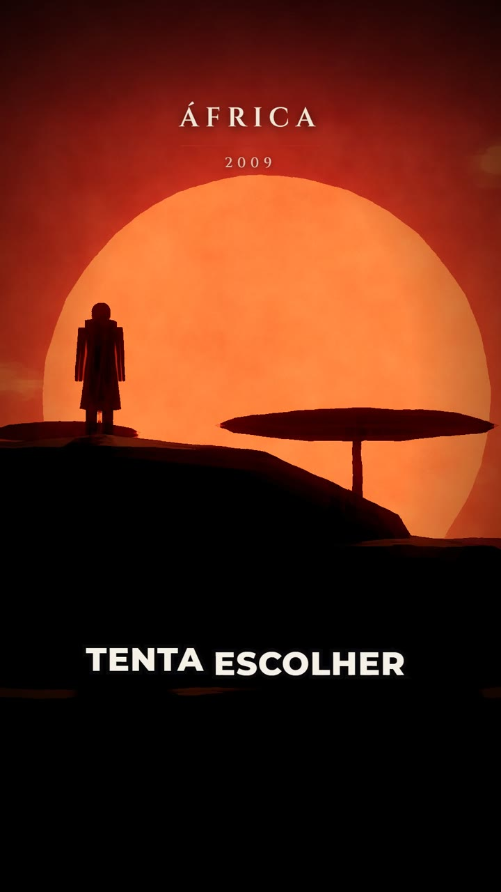
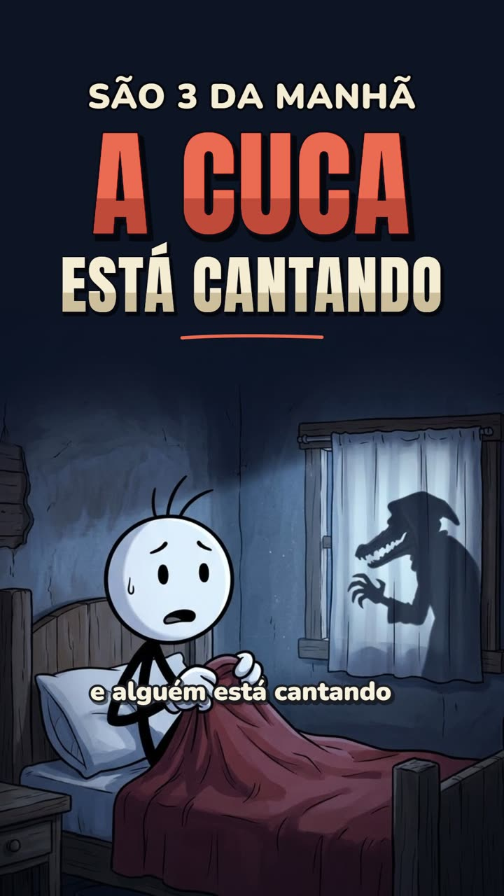

3D pintado por código
Cenários 3D que nascem do código e ganham acabamento de pintura. Nenhum arquivo de imagem. Foi assim o resumo de jogos.
Depois do primeiro vídeo, o que separa um canal dos outros é a direção de arte. Aqui estão três rotas que testamos ou estudamos, cada uma com os prompts, os números e os tropeços, e o jeito de guardar o seu formato em uma skill.
As três partem do método médio. Mude uma coisa por vez: primeiro a imagem, depois a voz, depois o ritmo.

Cenários 3D que nascem do código e ganham acabamento de pintura. Nenhum arquivo de imagem. Foi assim o resumo de jogos.

Imagens geradas por IA, animadas com câmera e trocadas a cada poucos segundos. Foi assim o terror do boneco palito.

Um kit aberto que põe bonecos 2D dentro de um mundo 3D no Blender, em um único voo de câmera. Não testamos: só empacotamos.
Quando um vídeo dá certo, as regras dele valem ouro: o estilo do personagem, o ritmo dos cortes, a voz, a legenda. Uma skill guarda tudo isso, e o próximo vídeo começa com uma frase.
Use dentro da pasta do projeto, depois de um vídeo aprovado.
Este projeto já produziu um vídeo que eu aprovei. Quero transformar o formato em uma skill do Claude Code, para pedir os próximos vídeos em uma frase. 1. Leia o projeto e liste o que se repete em todo vídeo: estrutura do roteiro, elenco, paleta, câmera, legendas, voz e as conferências antes do render. 2. Separe o que é regra do formato do que foi escolha só daquele vídeo. Me mostre as duas listas e espere eu aprovar. 3. Crie a pasta .claude/skills/[NOME DO FORMATO] com um SKILL.md: quando usar, o que perguntar, as etapas na ordem, onde parar para a minha aprovação e os comandos de cada etapa. 4. Aponte no SKILL.md para os scripts que já existem no projeto, sem duplicar código. 5. Escreva no fim do SKILL.md os erros que já cometemos e como evitar cada um. Depois me diga a frase exata que eu uso para pedir um vídeo novo, e faça um teste com o tema: [TEMA DE TESTE].
Skills prontas de outras pessoas. Antes de escrever a sua, veja o pacote de skills: pode ser que o formato que você quer já exista.
Um terceiro caminho, para quem quer cenário em 3D sem depender de gerador de vídeo. O kit foi criado por @caesarscales e é distribuído com licença MIT. Ele ensina o Claude Code a produzir Shorts em que bonecos 2D de cabeça redonda atuam dentro de um mundo 3D com contorno de tinta, em um único voo de câmera.
Livro de regras, bíblia de estilo, fórmula de roteiro e de gancho, o motor em three.js, cenários em Python para o Blender e as ferramentas de voz, tempo e legenda.
Roteiro aprovado, voz em uma tomada só, tempo de cada palavra, elenco novo, mundo 3D, quadros de conferência, mixagem e render no seu computador.
Python 3.10 ou mais novo, Node.js 18 ou mais novo, ffmpeg, Blender 4.2 ou mais novo e uma chave da ElevenLabs, ou a sua própria gravação.
ricksclips-style.winget install Python.Python.3.12; winget install OpenJS.NodeJS.LTS; winget install Gyan.FFmpeg; winget install BlenderFoundation.Blender
brew install python node ffmpeg; brew install --cask blender
set up this kit and run the Blender demo
make a 60 second cartoon short about why ships carried storm oil
.bat, então não consome o seu uso do Claude.Pelo ritmo do nosso vídeo de exemplo, 60 segundos de narração gastam perto de 950 caracteres. No plano gratuito da ElevenLabs isso daria uns 10 vídeos por mês, mas sem direito de uso comercial. Os detalhes estão em Opções de voz.
Em um arquivo .env dentro da pasta do kit, na linha ELEVEN_API_KEY= seguida da sua chave. Esse arquivo já fica fora do controle de versão. Nunca cole a chave em código nem em conversa.
Sobre esta cópia. O arquivo original traz folhas de quadros e transcrições de vídeos de outros canais, usadas como material de estudo. Elas não estão nesta cópia, porque pertencem aos criadores daqueles vídeos. O código, os documentos, as medições e a licença estão completos, e uma nota dentro do arquivo lista o que saiu.
Use o método, não o personagem. O kit nasceu do estudo de um canal específico, e o boneco padrão lembra o personagem daquele canal. Aproveite o motor e o processo, e desenhe elenco, paleta e histórias seus. O próprio kit manda criar um elenco novo a cada vídeo, escrever roteiros originais e fugir de temas que já viraram cópia em série. A frase do passo 4 é só o exemplo que acompanha o kit.
A página Viralizar mostra como escolher o nicho, o que medir e por que o vídeo longo importa.